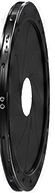
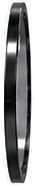
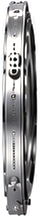
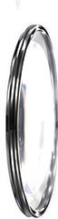
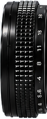
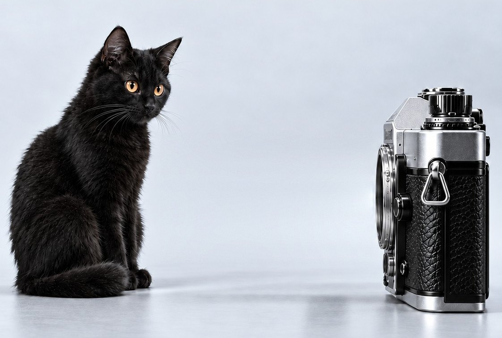

PROGRAM · 여덟 조각
렌즈 여덟 조각을 차례로 끼웁니다





- 1-2낯설게 보기 — 익숙한 학생을 처음처럼
- 3-5오래 보기 — 같은 장면을 세 번 기록
- 6-8함께 보기 — 동료의 기록과 겹쳐 보기

NEW WAYS OF SEEING
당신은 어떻게 보십니까?PERSPECTIVE / ANALOG STUDY
SAME SUBJECT · TWO WAYS
학생은 그대로,
보는 눈이 바뀝니다
"수업에 집중을 못 한다"
- 결과 하나로 판단
- 기록은 학기 말에 한 번
"그림 그릴 때는 40분을 버틴다"
- 장면을 나눠 본다
- 날마다 한 줄씩 적는다
F/2.8 · 1/125 · ISO 400NEW WAYS OF SEEING
당신은 어떻게 보십니까?PERSPECTIVE / ANALOG STUDY
REFERENCE · 밑줄 대조표
빌려 온 본문 #53 밑줄 대조표 · 내용은 다른 가상 예시
NEW WAYS OF SEEING
참고 · 다른 가상 예시PERSPECTIVE / ANALOG STUDY
LENS 01 – 02 · 낯설게 보기
이름표를 떼고 장면만 봅니다
"산만한 아이" 대신
"모둠 활동 7분째에 자리를 뜬다"
판단하는 말을 쓰지 않고, 언제 · 어디서 · 무엇을 했는지만 적습니다.
LENS 02 / 08NEW WAYS OF SEEING
익숙한 학생을 처음처럼PERSPECTIVE / ANALOG STUDY
LENS 03 – 05 · 오래 보기
세 번 보면 다른 것이 보입니다
ONE LOOK · 찾은 강점
THREE LOOKS · 찾은 강점
AFTER · 연수 참여자
자료: ○○교육청 관찰 연수 시범 운영(가상 예시)
NEW WAYS OF SEEING
같은 장면을 세 번 기록PERSPECTIVE / ANALOG STUDY
REFERENCE · 원인으로 모이는 선
빌려 온 본문 #94 원인으로 모이는 선 · 내용은 다른 가상 예시
NEW WAYS OF SEEING
참고 · 다른 가상 예시PERSPECTIVE / ANALOG STUDY
LENS 06 – 08 · 함께 보기
마지막 조각은 동료의 기록입니다
국어 시간, 발표를 피한다
- 3월 2주 · 4회
VIEW A미술 시간, 먼저 설명한다
- 3월 2주 · 3회
VIEW BNEW WAYS OF SEEING
동료의 기록과 겹쳐 보기PERSPECTIVE / ANALOG STUDY
ASSEMBLED · 다 끼운 뒤
렌즈가 다 끼워지면
세 가지가 남습니다
- 01판단 대신 장면을 적는 습관
- 02학생마다 강점 세 개
- 03동료와 겹쳐 보는 기록장
NEW WAYS OF SEEING
당신은 어떻게 보십니까?PERSPECTIVE / ANALOG STUDY
피사체는 그대로,
시선은 새로
NEW WAYS OF SEEING
○○교육청 교원연수원 · 모든 기관 · 수치는 가상 예시PERSPECTIVE / ANALOG STUDY